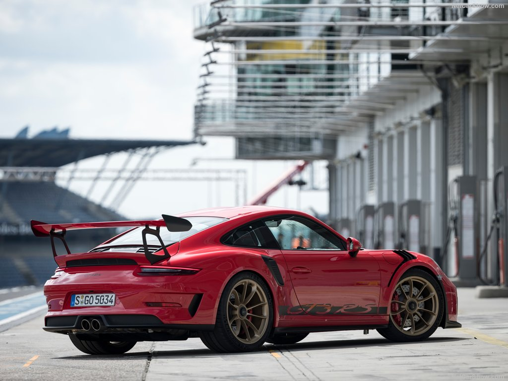
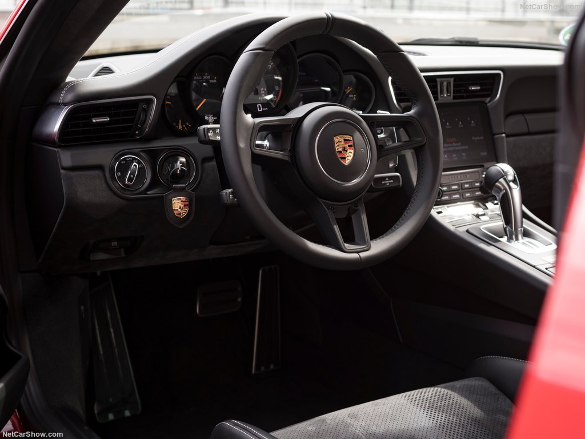
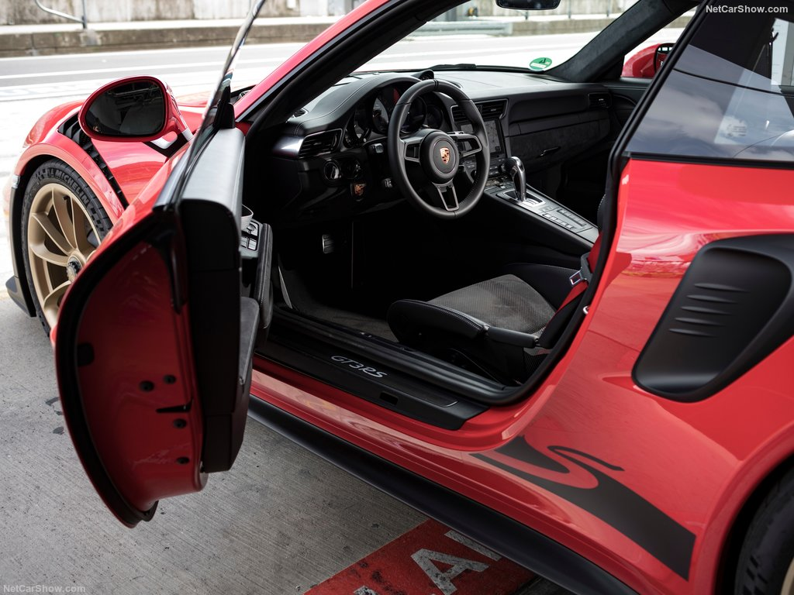
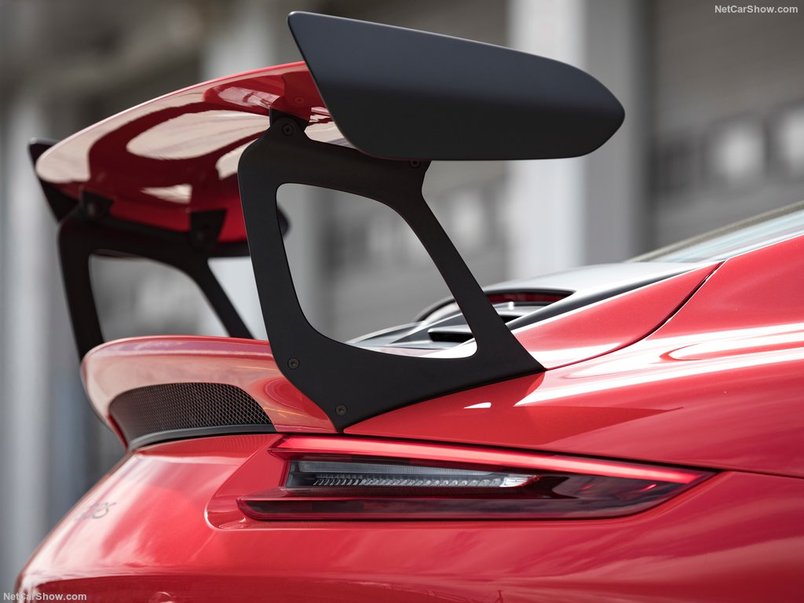
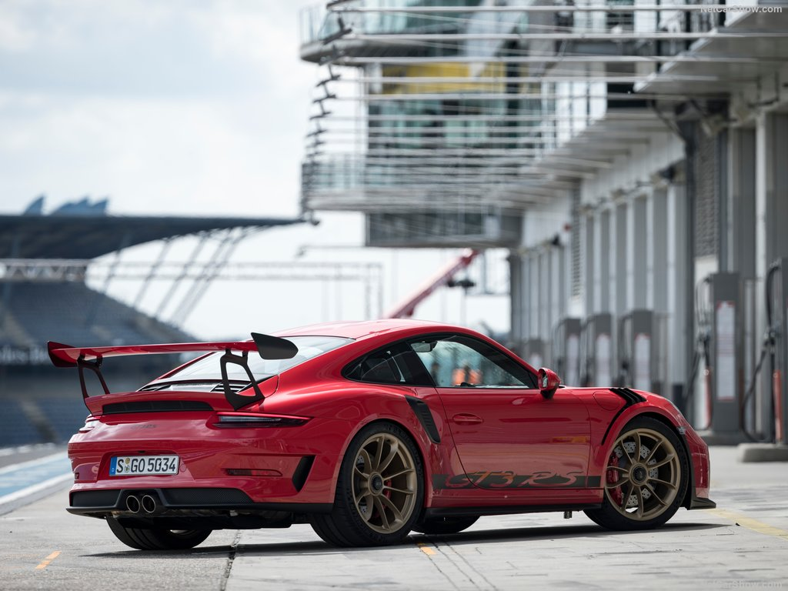
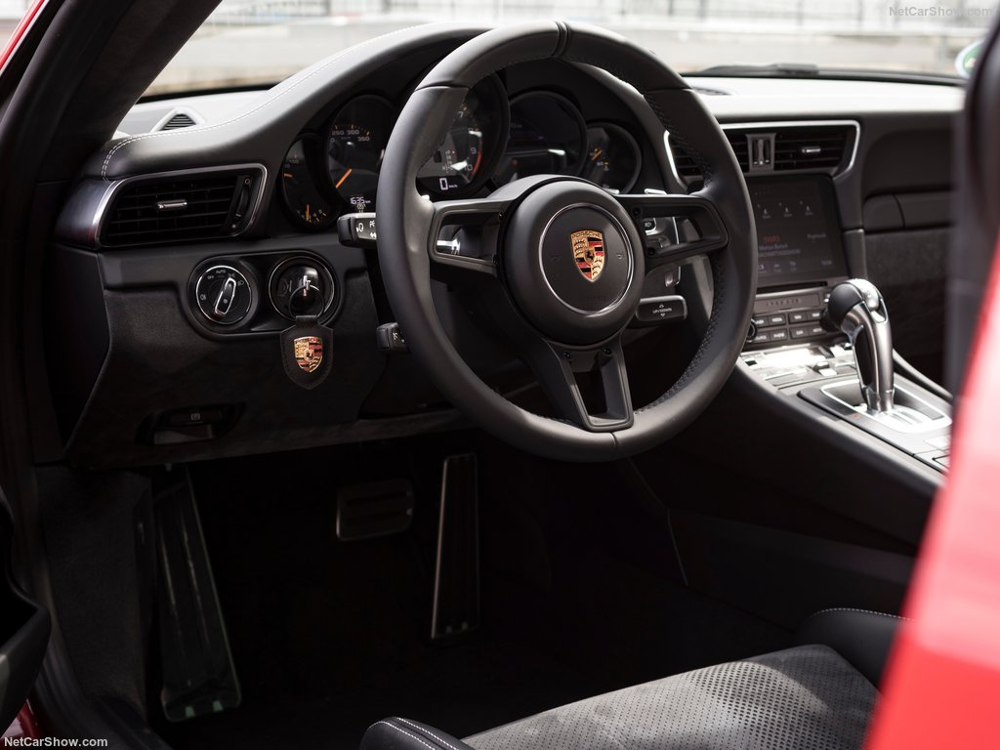
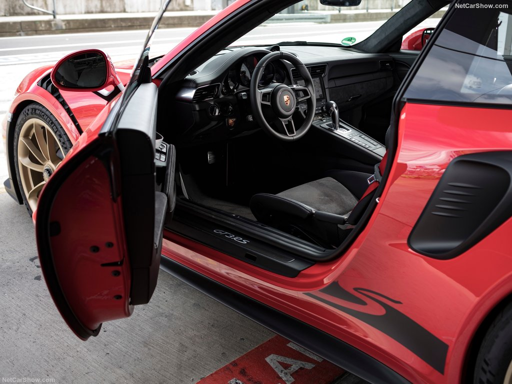
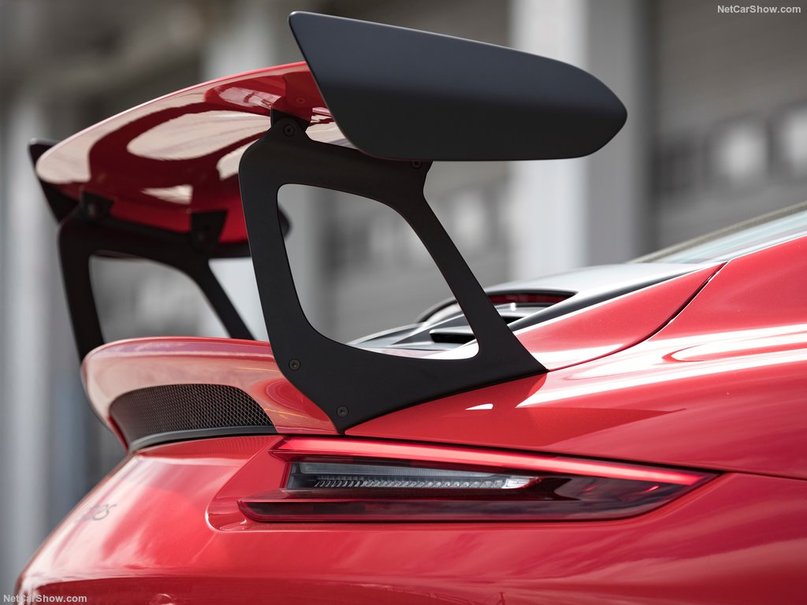

BUGATTI VEYRON (2009)
En abril de 1998, el Grupo Volkswagen se hace cargo de la marca Bugatti, presentándola por primera vez al público en el Salón Internacional del Automóvil de París con un estudio para un coupé de dos puertas. había encargado a Italdesign la creación del Bugatti EB 118. Unos meses más tarde, en marzo de 1999, en el Salón del Automóvil de Ginebra, un diseño del EB 218, también creado en Italdesign, causó sensación con una berlina de cuatro puertas que utilizaba el Mismo motor de 18 cilindros y 6,3 litros con 555 CV.Casi un año después, en otoño de 2000, se mostró por primera vez en París el Bugatti Veyron 16.4. El Bugatti Veyron 16.4 con lo último en prestaciones, el motor de 16 cilindros, 8 litros y 1.001 CV y sus especificaciones tecnológicas: 1.250 Nm a 2.200 rpm, velocidad máxima de más de 400 km/h, cuatro turbocompresores y cuatro motores permanentes. tracción total, características que se mantienen hasta el día de hoy, celebró su debut en la IAA de Frankfurt en septiembre de 2001.Esta version del 16.4 se fabrico hasta 2011 y mas tarde, las verciones GrandSport y SuperSport se iniciaron entre 2009 y 2010.
16V (8L)
CUPE
883KW(1001 a 1200CV)
7 VELOCIDADES, SEMIAUTOMATICO
14,7L
 






